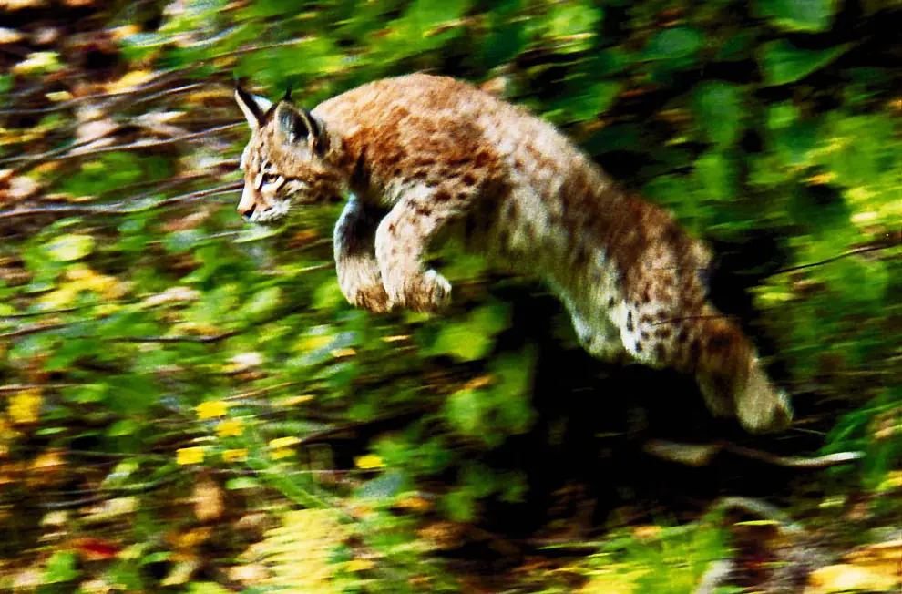
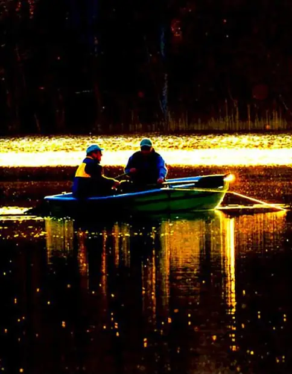
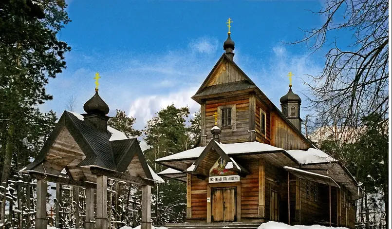
Ryś, Grand Prix Konkursu im. Włodzimierza Puchalskiego, 2002
Janusz Monkiewicz
Artysta fotografik.
Przyroda i architektura w Polsce i nie tylko.
Pisz, Mazury. W archiwum około 50 000 zdjęć.
Zobacz zdjęciaNieznane, piękne miejsca
Mieszkam w Piszu, małym miasteczku na Mazurach. Fotografuję przyrodę i architekturę: żurawie na mazurskich polach, mgły nad Pisą, drewniane cerkwie Podlasia, klasztory i muzea w całej Polsce, a także Wileńszczyznę.
Jestem członkiem rzeczywistym Stowarzyszenia Twórców Fotoklubu Rzeczypospolitej Polskiej z tytułem Artysta Fotograf (Fotografik) RP. W latach 2002-2006 i 2010-2013 byłem prezesem Związku Polskich Fotografów Przyrody, Okręgu Warmińsko-Mazurskiego.
Za zdjęcie rysia w skoku otrzymałem I miejsce w kategorii "Ruch" i Grand Prix Konkursu im. Włodzimierza Puchalskiego za 2002 rok. To jedno z moich najważniejszych osiągnięć.
Moim największym marzeniem jest przybliżenie nieznanych, pięknych miejsc i zabytków architektury polskiej.Janusz Monkiewicz
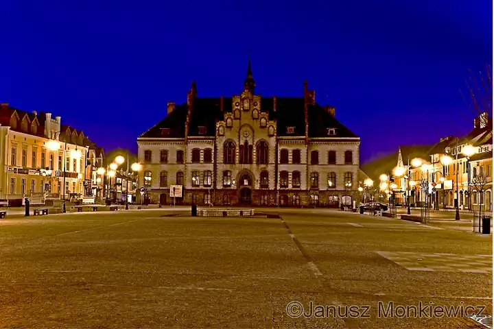
Galeria
Wybór z archiwum. Kliknięcie zdjęcia pokazuje cały kadr.

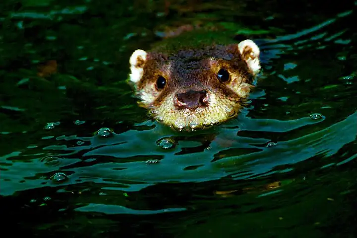


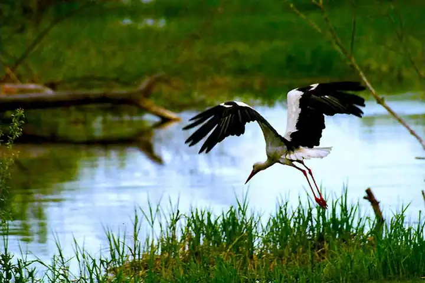


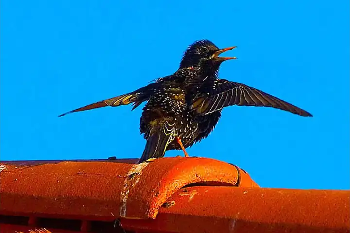


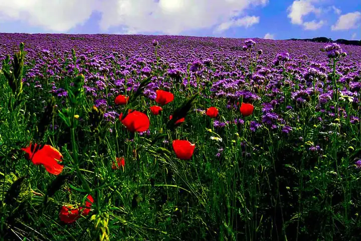
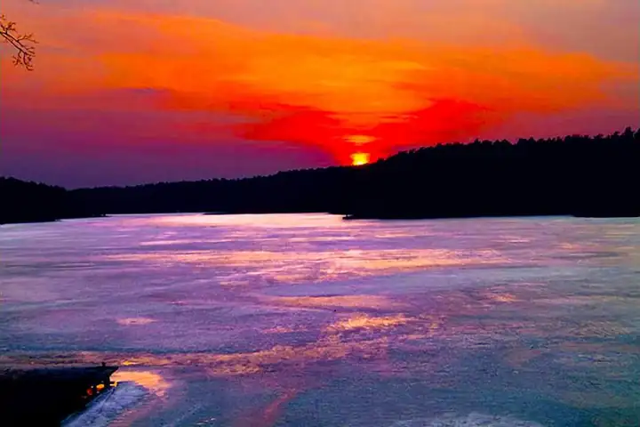
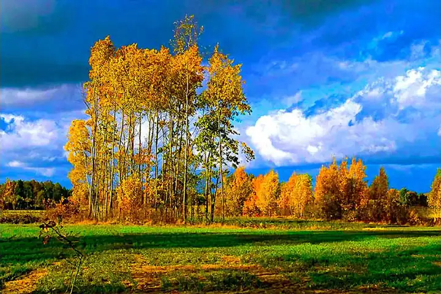
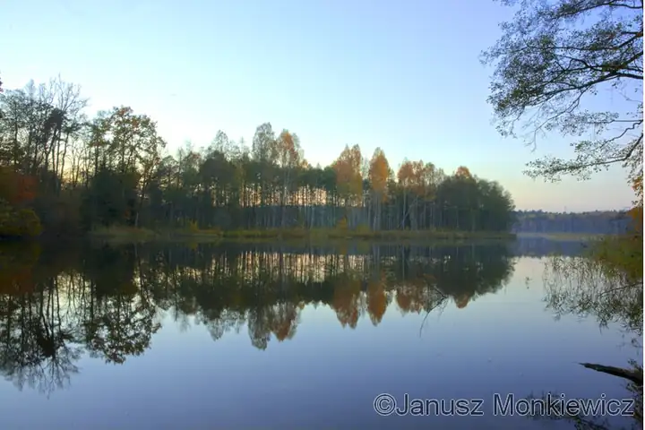

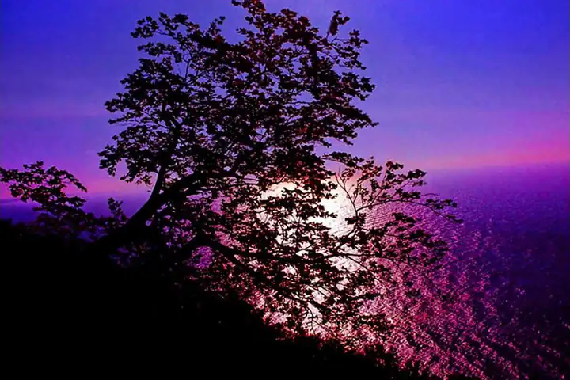
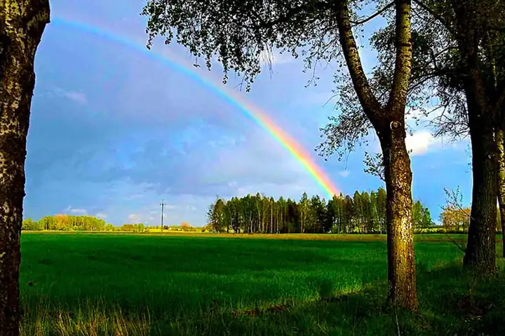

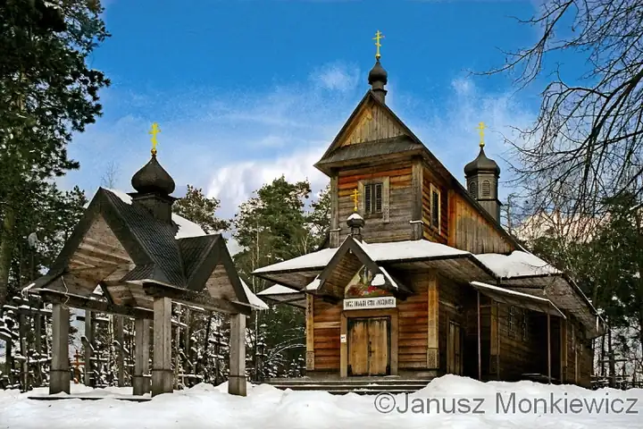


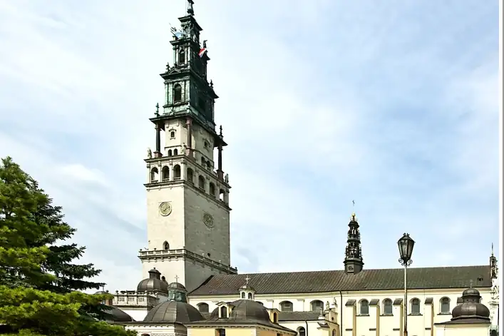


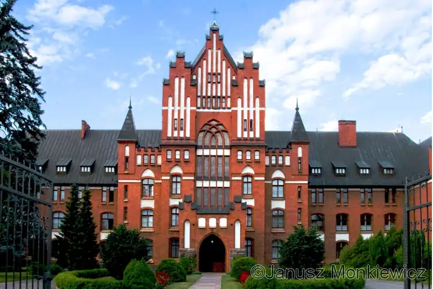
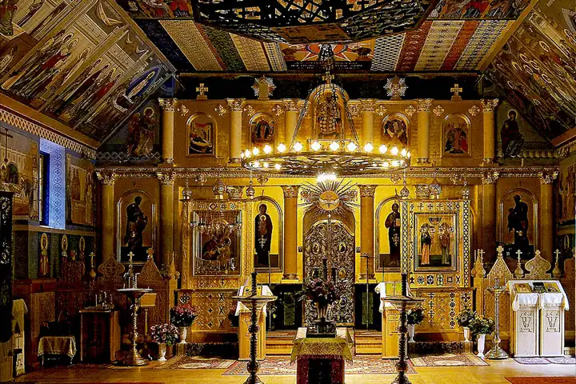

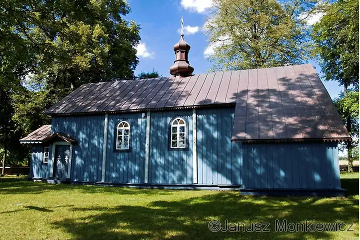

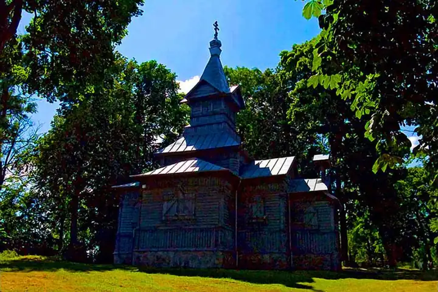
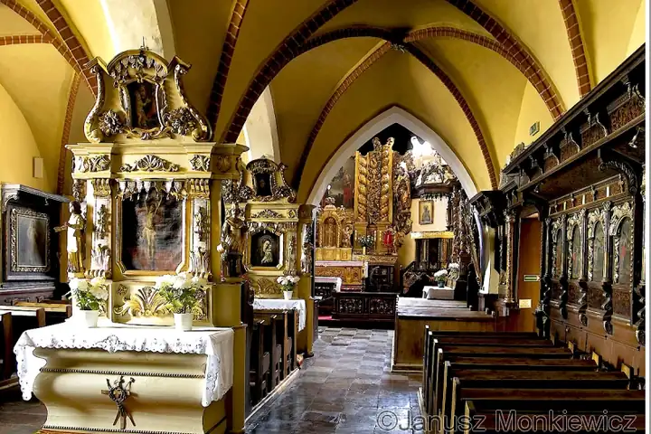


Kowale, garncarze, rzeźbiarze, tkaczki i łyżkarze w swoich pracowniach. Cykl z 2010 roku.
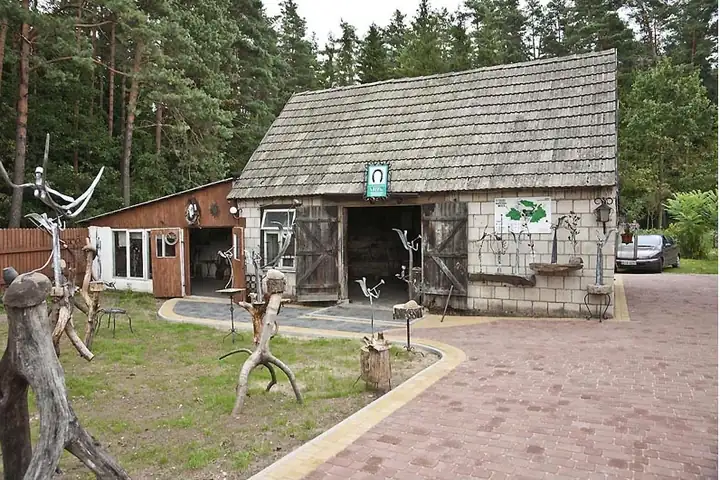
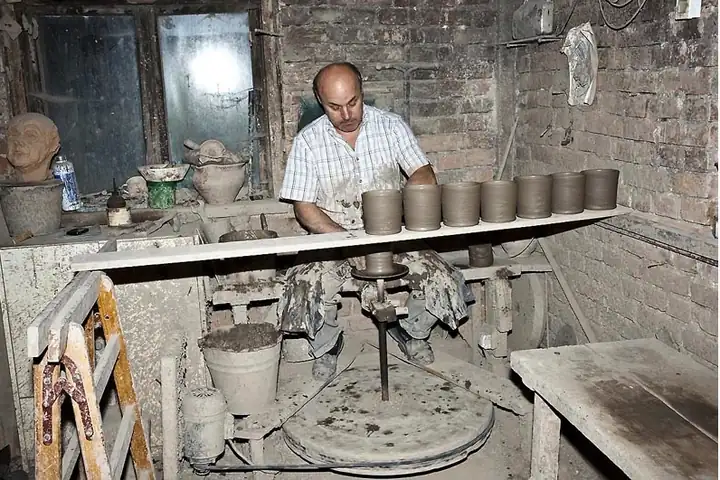

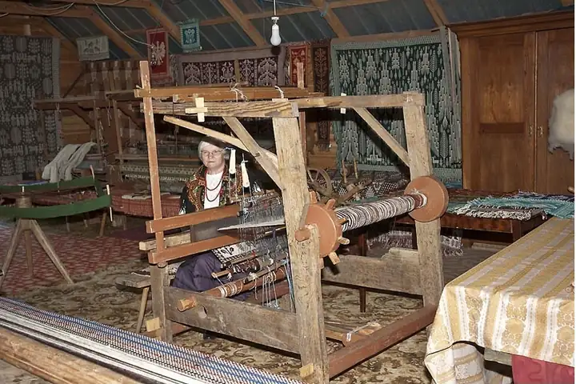
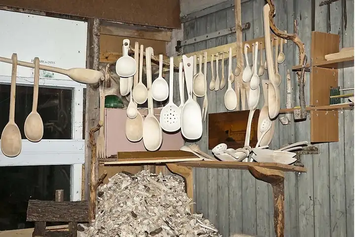
Na gotowej stronie każde województwo będzie osobną galerią z własnym adresem, np. janusz-monkiewicz.pl/podlaskie, który można wysłać w wiadomości.
Wystawy i albumy
Wybór z wystaw zbiorowych, indywidualnych i publikacji. Pełna lista znajdzie się na osobnej podstronie.
Albumy i książki autorskie
- "Warmińsko-Mazurskie"album, wydawnictwo Bosz
- "Dolnośląskie"album, wydawnictwo Bosz, czterech autorów
- "Przewodnik Warmińsko-Mazurskie"książka, 408 stron, wydawnictwo Bosz
Moje zdjęcia są też m.in. w albumie "Wolin", w książkach "Polska niezwykła", "Miasta Polskie", "1000 muzeów w Polsce" i w wydawnictwach Reader's Digest.
Wystawy zbiorowe
- "Śladami Edwarda Hartwiga"Galeria Sztuki PZU, Warszawa
- "National Parks in Poland"Hamburg, Berlin, Strasburg, 2004
- "EXPO 2005"Pawilon Polski, Aichi, Japonia
- "Ginące gatunki zwierząt w Polsce"National Geographic Polska, 2005
- "Przyroda w obiektywie"Muzeum Przyrody w Olsztynie, 2014
Wystawy indywidualne
- Ratusz Miejski w Piszu
- Klasztor Wigierski w WigrachGaleria Domu Pracy Twórczej
- "Warmia"Zamek w Lidzbarku Warmińskim, 2006
- "Warmia"Konsulat RP w Kaliningradzie, 2006
- Meppen, Niemcy2008
Zapytanie o zdjęcie
W swoim archiwum mam około 50 000 zdjęć przyrody i architektury. Jeśli szukają Państwo konkretnego miejsca, zabytku albo gatunku, proszę napisać albo zadzwonić.
- E-mailmonkiewicz@janusz-monkiewicz.pl
- Telefon501 668 087
- MiejscePisz, Mazury